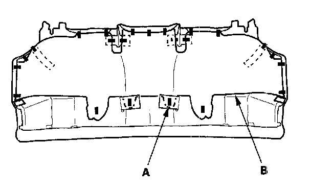
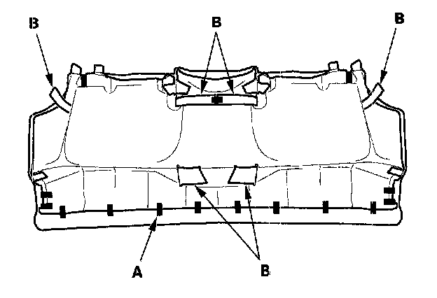
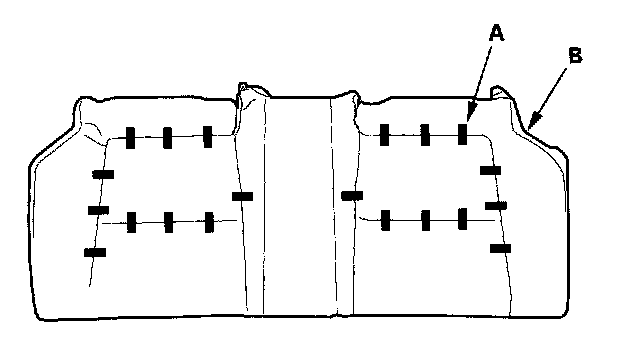
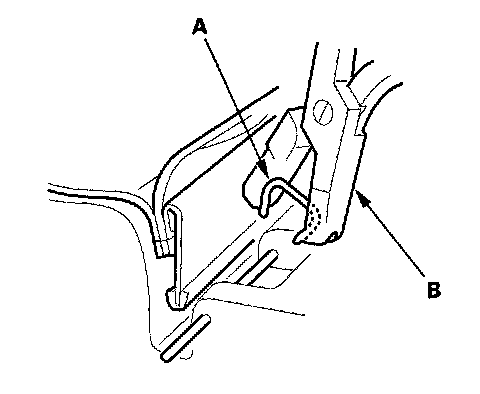
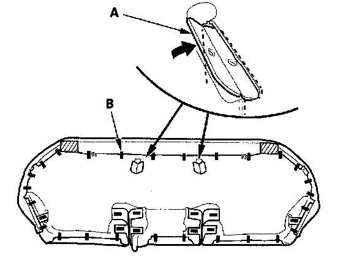
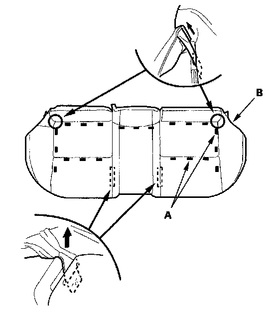
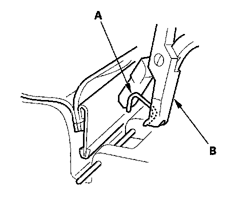

Rear Seat Cushion Cover Replacement
Rear Seat Cushion Cover Replacement2-door
NOTE:
- Take care not to tear the seams or damage the seat covers.
- Put on gloves to protect your hands.
1. Remove the seat cushion.

2. From the back of the seat-back, release the clips (A), then remove the insulator (B).

3. Release all the clips (A), in the seat cushion cover (B) through the holes in the seat cushion pad, and fold back the seat cushion cover.

4. Pull back the edge of the seat cushion cover all the way around, and release the clips (A), then remove the seat cushion cover (B).

5. Install the cover in the reverse order of removal, and note these items:
- To prevent wrinkles when installing a seat cushion cover, make sure the material is stretched evenly over the pad before securing the clips.
- Replace any clips (A) you removed with new ones. Install them with commercially available upholstery ring pliers (B).
4-door
NOTE:
- Take care not to tear the seams or damage the seat covers.
- Put on gloves to protect your hands.
1. Remove the seat cushion.

2. From the back of the seat-back, pass both lower retainers (A) through the slots in the seat cushion pad, and release all the clips (B), and fold back the seat cushion cover.

3. Pull back the edge of the seat cushion cover all the way around, and release the clips (A), from the seat cushion cover (B) through the hole in the seat cushion pad, then remove the seat cushion cover.

4. Install the cover in the reverse order of removal, and note these items:
- To prevent wrinkles when installing a seat cushion cover, make sure the material is stretched evenly over the pad before securing the clips.
- Replace any clips (A) you removed with new ones. Install them with commercially available upholstery ring pliers (B).